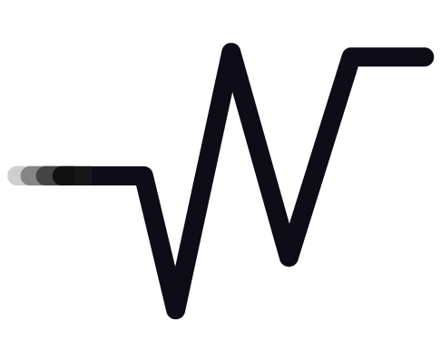

<mat-toolbar color="primary" class="grad-back fixed-toolbar">
    <mat-toolbar-row>
        <button mat-icon-button (click)="sidenav.toggle();" class="color-dark">
            <mat-icon>menu</mat-icon>
        </button>
        
        <a routerLink="/" class="font-primary text-decoration-none">WorkFlow</a>
        <span style="flex: 1 1 auto;"></span>

        <!-- Boton para iniciar sesion -->
        <button mat-button routerLink="/login">Iniciar Sesion</button>

        <!-- Acá se mostrará el nombre de usuario y el nombre del permiso de usuario que inicie sesion -->
        <label class="color-dark" style="font-size: 14px; margin: 0 20px 0 0;">{{ userName }} | {{ permisoNombre
            }}</label>
        <button mat-icon-button class="color-dark" [matMenuTriggerFor]="menu">
            <mat-icon>account_circle</mat-icon>
        </button>
        <mat-menu #menu="matMenu">
            <button mat-menu-item routerLink="/usuario/configuracion">
                <mat-icon>manage_accounts</mat-icon>
                Ajustes de Perfil</button>
            <button mat-menu-item (click)="cerrarSesion()">
                <mat-icon>logout</mat-icon>
                Cerrar Sesion</button>
        </mat-menu>
    </mat-toolbar-row>
</mat-toolbar>
<mat-sidenav-container>
    <mat-sidenav #sidenav opened="false" mode="over" class="fixed-sidenav" style="width: 265px; padding: 10px 15px; margin-top: 64px;" autoFocus="false">
        <mat-nav-list >
            <mat-list-item routerLink="/">
                <mat-icon matListItemIcon style="color: black;">home</mat-icon>
                <div mat-line>Inicio</div>
            </mat-list-item>
            <mat-list-item routerLink="/proyecto">
                <mat-icon matListItemIcon style="color: black;">folder_open</mat-icon>
                <div mat-line>Proyecto</div>
            </mat-list-item>
            <mat-list-item routerLink="/tarea">
                <mat-icon matListItemIcon style="color: black;">assignment</mat-icon>
                <div mat-line>Tarea</div>
            </mat-list-item>
            <mat-list-item routerLink="/usuario">
                <mat-icon matListItemIcon style="color: black;">group</mat-icon>
                <div mat-line>Usuarios</div>
            </mat-list-item>
            <mat-list-item routerLink="/tareausuario">
                <mat-icon matListItemIcon style="color: black;">assignment</mat-icon>
                <div mat-line>Tareas Asignadas</div>
            </mat-list-item>
        </mat-nav-list>
    </mat-sidenav>
    <mat-sidenav-content>
        <div class="content-image">
            <router-outlet />
            

            <!-- Pie de pagina -->
            <div class="footer-content">
                <h3><strong>WorkFlow</strong></h3>
                <p>Plataforma líder en gestión de proyectos y tareas para equipos productivos.</p>
                <p>Organizando tus proyectos y tareas eficientemente.</p>
            </div>
            <div class="footer-bottom">
                <p>Contacto: <a href="#">info&#64;workflow.com</a></p>
                <p>&copy; 2024 WorkFlow. Todos los derechos reservados.</p>
            </div>
        </div>
    </mat-sidenav-content>
</mat-sidenav-container>